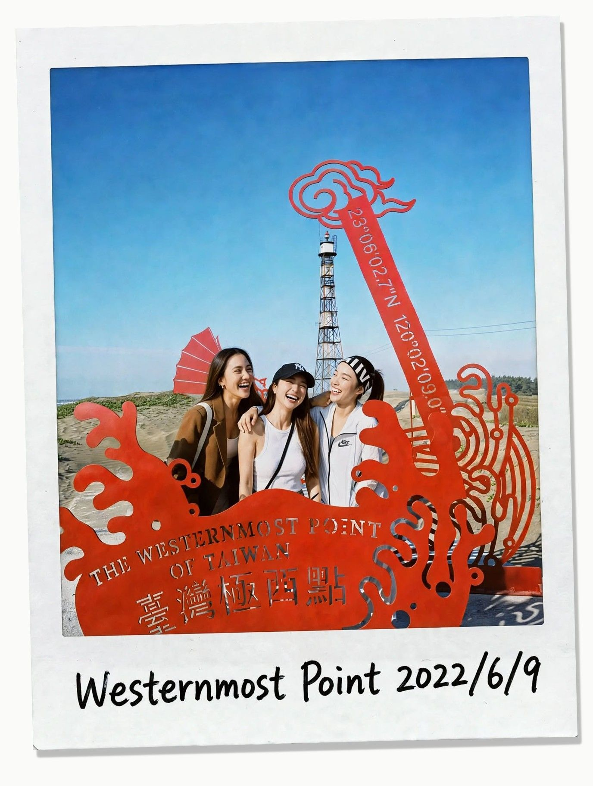
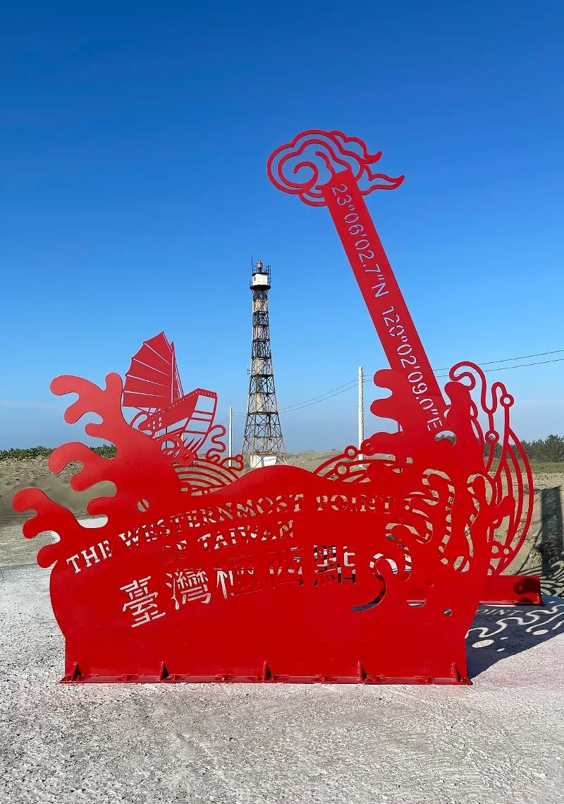
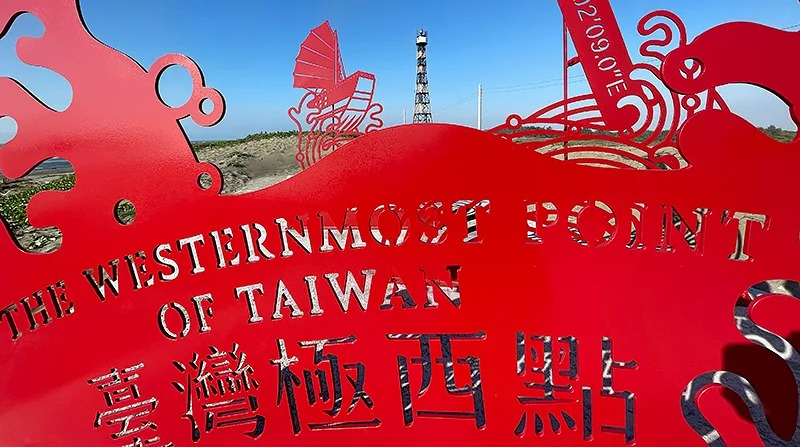
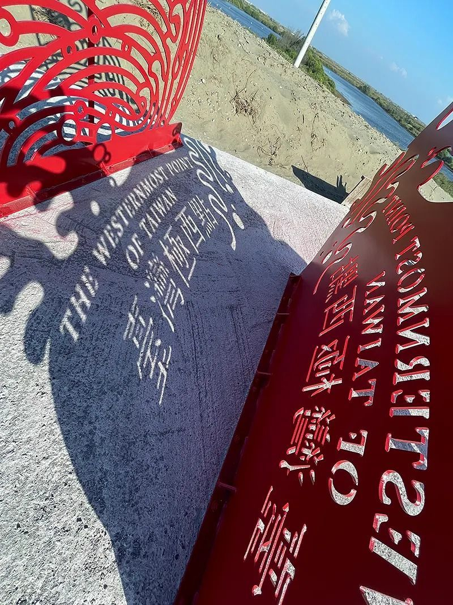
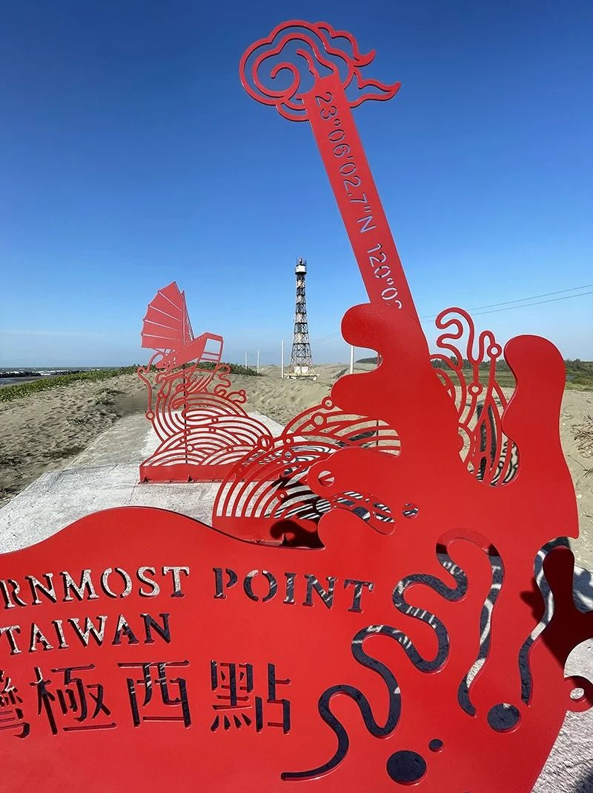
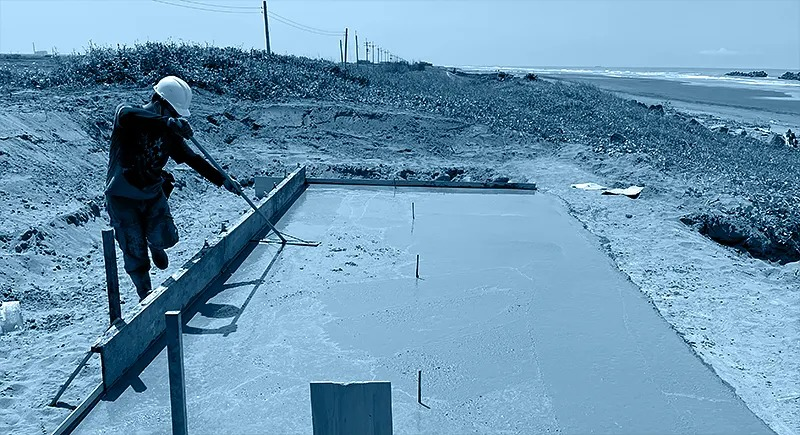
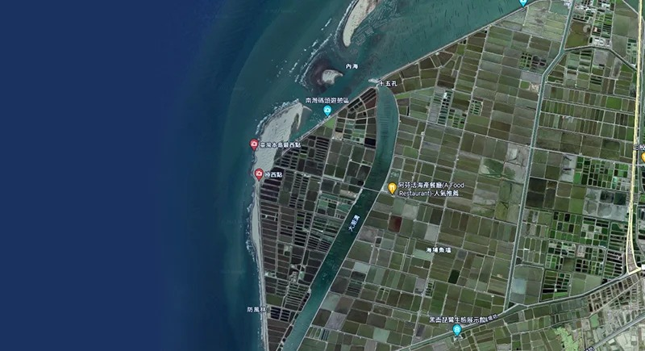
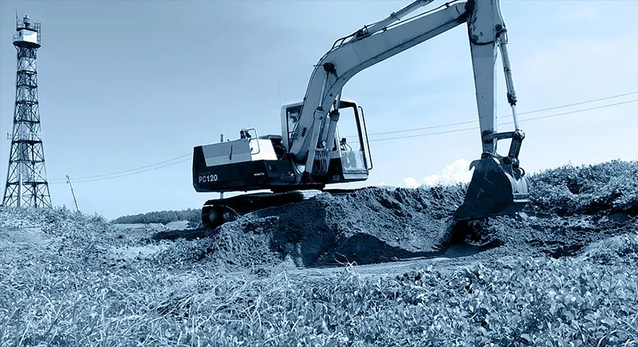
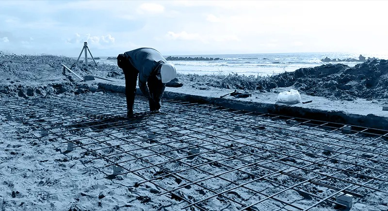

The Westernmost Point of Taiwan 23°06'02.7"N 120°02'09.0"E
A Landmark on Ground That Won't Hold Still
The site sits at the threshold between sandbar and surf, with no solid ground beneath it, fully exposed to sea wind, salt spray, and intense UV. Our task was to create a landmark on this unstable terrain that could resist time. The design composes a walkable montage tunnel from a sequence of mask panels, light as paper yet architectural in scale, each face carved with a distinct character. Their perforated boundaries choreograph a delicate interplay between privacy and gaze.
Light, Shadow, and the Act of Walking Through
We designed the act of viewing as circulation itself. The angle and height of each panel are calibrated to the solar path and prevailing wind direction. In the morning, oblique light slices through and guides a slow procession forward. In the afternoon, overlapping shadows compel visitors to pause. At dusk, the entire tunnel is pierced by the afterglow, human silhouettes and paper-cut shadows merging into one, and the circulation becomes a passage from light into darkness, and back out into the sea and sky.
All 304, No Breach
To withstand the extreme saline environment, the project uses an all-304 stainless steel system. From the primary structure and mask panels to every bolt, stud, and screw, all hardware is fabricated in 304 stainless steel, eliminating galvanic corrosion caused by dissimilar metal contact. Every component is finished with a fluorocarbon coating (PVDF) for weather resistance, UV resistance, and long-term colour retention. Components are factory-finished with the coating before being transported to site; any micro-abrasions or breaches incurred during fastening are touched up on-site with colour-matched fluorocarbon paint, keeping the coating film continuous and defect-free so every joint can withstand salt-laden corrosion for years to come.
The result translates the intricate lexicon of traditional paper-cutting into a spatial experience built to hold up, structurally and visually, under high-specification metal craftsmanship.








